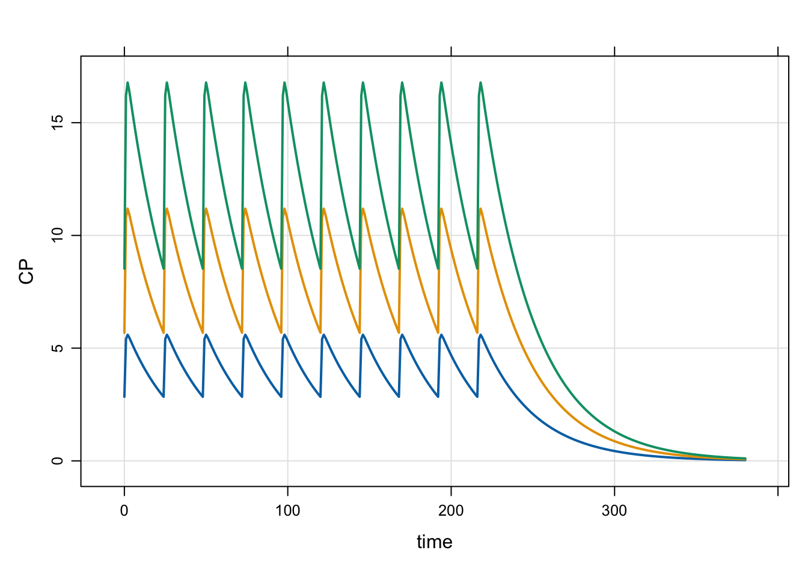

library(mrgsolve)
library(dplyr)1 Overview
Dynamic dosing in pharmacokinetic (PK) or pharmacokinetic pharmacodynamic (PKPD) models allows for changes in the dose regimen in response to changes in model state variables over the course of a simulation. evtools is a plugin for mrgsolve that exposes extra code you can use in your model to execute dosing or other events dynamically in a simulation. Note that, while the examples shown here do execute dosing regimens from a model in a variety of ways, the actual dosing pattern does not respond to the evolution of the system. I did this for clarity, keeping the focus on the syntax to execute the doses rather than complexity that would be required to only dose in response to other parts of the system. In each example, it should be clear where decisions can be be made to alter dosing regimen specifics.
All of the code for running these examples is available in a github repository.
1.1 Reference
Simulating Adaptive Dosing Regimens from PK and PKPD Models Using mrgsolve
15th American Conference on Pharmacometrics
Poster: W-007, Wednesday November 13, 2024
Author: Kyle Baron
1.2 Setup
We’ll use these packages to run the code.
And I’m writing these examples with the following mrgsolve version
packageVersion("mrgsolve")[1] '1.7.2.9000'1.3 Base model
All of the examples are based on a simple one-compartment PK model shown here:
[ plugin ] evtools
[ set ] outvars = "CP"
[ param ] CL = 1, V = 32, KA = 2, DOSE = 100
[ pkmodel ] cmt = "A1,A2", depot = TRUE
[ event ]
// Do something <------ we'll vary what is in this block
[ error ] capture CP = A2/V;I’ll make some minor tweaks to parameter values and outputs from time to time, but the model will largely stay like this, except for the $EVENT block. Each example will update the code in that block to illustrate different functionality provided by evtools.
Note that you need to invoke the evtools plugin to get this code to work
[ plugin ] evtoolsAlso note that we write code to do dynamic dosing in the [ event ] block
[ event ]
// Do something <------ we'll vary what is in this blockThis is a new block with mrgsolve version 1.5.2. The block functions like and is called just prior to $ERROR (or $TABLE). So the important part here is that your event code gets called just as the system advances to the next time and just prior to writing outputs for the most recent advance. While you can also run model event code in $PK, we recommend always writing the code in $EVENT.
Let’s get to the worked examples.
2 Examples
2.1 evtools-0 single dose
In this event block, we just need to execute a single dose to A1 right when we come to a new individual
[ event ]
if(NEWIND > 1) return;
evt::bolus(self, DOSE, 1); Because we don’t need to customize this dose at all, pass self as the first argument and evt::bolus will “send” it back to mrgsolve for you. Couldn’t be easier!
idata <- expand.idata(DOSE = c(100, 200, 300))
idata ID DOSE
1 1 100
2 2 200
3 3 300mod <- mread("model/evtools-0.mod")
out <- mrgsim(mod, idata = idata, end = 72, delta = 0.2)
plot(out)2.2 evtools-1 additional doses
In this example, we give multiple doses by specifying the dose interval and the number of additional doses.
[ event ]
if(NEWIND > 1) return;
evt::ev dose = evt::bolus(DOSE, 1);
evt::ii(dose, INTERVAL);
evt::addl(dose, TOTAL-1);
self.push(dose); Here, we call evt::bolus() without passing self. This means we’ll get and object back that we can customize, adding the dosing interval ii and number of additional doses addl. Once we’re done customizing, we need to push the object back for processing.
First, an example with a single dose level
mod <- mread("model/evtools-1.mod")
out <- mrgsim(mod, end = 320)
plot(out)Next, look at multiple dose levels
idata <- expand.idata(DOSE = c(100, 300, 1000))
head(idata) ID DOSE
1 1 100
2 2 300
3 3 1000out <- mrgsim(mod, idata = idata, end = 380)
plot(out)We can also look at a single dose and multiple dose intervals
idata <- expand.idata(DOSE = 100, INTERVAL = c(6, 12, 24, 48))
idata <- mutate(idata, TOTAL = 10*24/INTERVAL)
head(idata) ID DOSE INTERVAL TOTAL
1 1 100 6 40
2 2 100 12 20
3 3 100 24 10
4 4 100 48 5out <- mrgsim(mod, idata = idata, end = 380)
plot(out)2.3 evtools-2 additional doses, steady state
In this example, we create an object for a bolus dose, then modify it to dose to steady state at a given dosing interval (a parameter called INTERVAL) and give some additional doses (a parameter called TOTAL).
[ event ]
if(NEWIND > 1) return;
evt::ev dose = evt::bolus(DOSE, 1);
evt::ss(dose, 1);
evt::ii(dose, INTERVAL);
evt::addl(dose, TOTAL-1);
self.push(dose); Because we’re working on this event object, we need to push() it back to mrgsolve for processing.
First, do a single dose level to steady state
mod <- mread("model/evtools-2.mod")
out <- mrgsim(mod, end = 380)
plot(out)Next look at several dose levels, administered to steady states
idata <- expand.idata(DOSE = c(100, 200, 300))
head(idata) ID DOSE
1 1 100
2 2 200
3 3 300out <- mrgsim(mod, idata = idata, end = 380)
plot(out)
2.4 evtools-3 multiple doses, user-controlled A
This example also shows multiple doses, but rather than scheduling them through addl(), we write our own code to manage the dosing interval. The benefit of this “user-controlled” approach is that you always know when the next dose will happen. Although not illustrated here, this allows you to delay a dose or move a dose up in time.
[ event ]
if(std::fmod(TIME,INTERVAL) == 0) {
evt::infuse(self, DOSE, 1, DOSE/OVER);
}If INTERVAL is 24, we will get doses every 24 hours, as shown below
mod <- mread("model/evtools-3.mod")
out <- mrgsim(mod, end = 480)
plot(out)Next, we show how you can simulate from this model, but with several different dosing intervals.
idata <- expand.idata(DOSE = 100, INTERVAL = c(6, 12, 24, 48))
idata <- mutate(idata, TOTAL = 10*24/INTERVAL)
head(idata) ID DOSE INTERVAL TOTAL
1 1 100 6 40
2 2 100 12 20
3 3 100 24 10
4 4 100 48 5out <- mrgsim(mod, idata = idata, end = 380)
plot(out)2.5 evtools-4 multiple doses, user-controlled B
This example is just another way to implement the bookkeeping required to track when the next dose is given, and alter the dosing time if needed. I think this approach is a little more flexible than what we saw in evtools-3.
[ event ]
if(TIME > END) return;
if(NEWIND <=1 ) {
double nextdose = 0;
}
if(evt::near(TIME, nextdose)) {
evt::infuse(self, DOSE, 1, DOSE/OVER);
nextdose = nextdose + INTERVAL;
}The evt::near() function works just like the dplyr function.
First, simulate a single dose level and dosing duration
mod <- mread("model/evtools-4.mod")
out <- mrgsim(mod, end = 480)
plot(out)Next, do some sensitivity analysis on END, a parameter controlling the duration of dosing.
idata <- expand.idata(END = c(60, 120, 240, 480, 600))
head(idata) ID END
1 1 60
2 2 120
3 3 240
4 4 480
5 5 600out <- mrgsim(mod, idata = idata, end = 680, recover = "END")
plot(out, CP ~ time | factor(END))
See model/evtools-4.mod for more details on how this is set up.
2.6 evtools-5 start dosing later
This example looks just like the evtools-2 model, but this time we’ll start the dose later in the simulation. In contrast, evtools-2 started the dosing “now”.
[ event ]
if(NEWIND > 1) return;
evt::ev dose = evt::bolus(DOSE, 1);
evt::rate(dose, DOSE/OVER);
evt::retime(dose, 120);
evt::ss(dose, 1);
evt::ii(dose, 24);
evt::addl(dose, 5);
self.push(dose);In this example, we’ll again simulate several dose levels
mod <- mread("model/evtools-5.mod")
idata <- expand.idata(DOSE = c(100, 150, 200))
head(idata) ID DOSE
1 1 100
2 2 150
3 3 200out <- mrgsim(mod, idata = idata, end = 480)
plot(out)2.7 evtools-6 reset the system
This is a simple intervention to reset the system every 72 hours. I’m including the $PK block as well, to show that the compartment 2 initial value is 1000 units. By resetting the system every 72 hours, it appears like we could be dosing with that dose interval. But the simulation is different than every 72 hour dosing because we reset the system so the Amax in compartment 2 is always 1000; if we were dosing 1000 mg Q72 hours, Amax would increase over time due to accumulation.
[ pk ]
A1_0 = 0;
A2_0 = 1000;
[ event ]
if(std::fmod(TIME,72) == 0 || NEWIND <= 1) {
evt::reset(self);
}mod <- mread("model/evtools-6.mod")
out <- mrgsim(mod, end = 680)
plot(out)
2.8 evtools-7 reset and dose
This example shows how we can reset the system and then dose.
[ event ]
if(NEWIND <= 1) {
evt::ev dose = evt::bolus(50, 1);
evt::ii(dose, 12);
evt::addl(dose, 22);
self.push(dose);
}
if(evt::near(TIME, 290)) {
evt::ev dose = evt::reset(100, 1);
evt::ii(dose, 24);
evt::addl(dose, 10);
self.push(dose);
}The simulation starts out with a sequence of 23 doses, given every 12 hours. Then at 290 hours, we reset the system and dose 100 mg every 24 hours. In this example, we continue giving bolus doses after the reset. We could also reset and give infusions by passing the infusion rate in to evt::reset().
mod <- mread("model/evtools-7.mod")
out <- mrgsim(mod, end = 680)
plot(out)2.9 evtools-8 replace
The replace functionality works like a bolus dose, but the amount in the compartment is overwritten with amt rather than adding amt to the current amount in the compartment The replace functionality isn’t easily illustrated with a PK model like this; usually we replace with a unit indicator or something along those lines. But I’ll force the code into this model so you can see what it happens.
In the example, we start an infusion in to the depot compartment at 48 hours and let it run until 148 hours. At 150 hours, we drop the amount in the central compartment to 10 and then watch the end of absorption happen.
[ event ]
if(evt::near(TIME, 48)) {
evt::infuse(self, 300, 1, 3);
}
if(evt::near(TIME, 150)) {
evt::replace(self, 10, 2);
}It’s not a simulation we’d normally do, but including it here to show the syntax for replacing compartment amounts.
mod <- mread("model/evtools-8.mod")
out <- mrgsim(mod, end = 300)
plot(out)replace() is also similar to reset(). Specifically, when you reset or replace, there is a discontinuity introduced in the simulation. The ODE solver (if used) resets at the event time and starts again from the event time.
Some differences between replace() and reset() are
replace()works on a single compartment,reset()works on all compartmentsreplace()sets the compartment amount to a user-chosen value,reset()returns compartment amounts back to the initial condition
2.10 evtools-9 pre-code dosing cohorts in the model
In this example, we can pre-code different dosing regimens into the model, and select them by “cohort” name (or number).
The dosing cohorts are
- 50 mg daily
- 75 mg daily
- 100 mg daily
- 25 mg twice-daily
- 50 mg twice daily x4, then 75 mg daily
We select the dosing regimen by specifying the COHORT parameter, ranging from 1 to 5; no dosing takes place if COHORT is outside of this range. COHORT defaults to 0 for safety. There is a parameter called DAYS that controls the number of days of dosing.
Run a test simulation from Cohort 5
mod <- mread("model/evtools-9.mod")
out <- mrgsim(mod, end = 480, param = list(COHORT = 5))
plot(out)Then examine all the cohorts in a single run
idata <- expand.idata(COHORT = seq(5))
idata ID COHORT
1 1 1
2 2 2
3 3 3
4 4 4
5 5 5out <- mrgsim(mod, idata = idata, end = 480, recover = "COHORT")
plot(out, CP ~ time | factor(COHORT), scales = "same")This is admittedly a little gimmicky. To actually implement this, you’d likely have a model and a finite set of dose regimens that you’re very interested in and need to simulate over and over. Because COHORT defaults to 0 (no modeled events), you can always pass in your own data set and simulate from that instead of the hard-coded cohorts. So take it for what it’s worth. I hope it still inspires you to get creative with using this evtools plugin.
2.11 evtools-99 automatic dose regimen
This example shows how you can create a regimen object that will implement a dosing regimen that can be updated as the simulation proceeds. Notice that we have some additional code here, including declaring this regimen object (reg) in the global block.
[ global ]
evt::regimen reg;
[ event ]
if(NEWIND <= 1) reg.init(self);
reg.ii(INTERVAL);
reg.amt(DOSE);
reg.rate(reg.amt() / OVER);
reg.until(UNTIL);
reg.execute();Previously, we implemented dosing regimens by scheduling additional doses through evt::addl() and we’ve also implemented doing regimens where we have had to do the bookkeeping to track the dosing interval and always setting the time for the next dose. Using addl() gets you out of doing the bookkeeping, but all the doses in the regimen are set up and you can’t change what happens in the future. User-implemented regimens are more flexible, but require some creativity to do the bookkeeping. Using a regimen object splits that difference, allowing you to start dosing at a given interval with mrgsolve tracking when is the next dose time. But flexibility is retained with the ability to update dose amount, dose interval, duration of dosing on the fly, with those changes automatically getting folded into the execution of the regimen.
mod <- mread("model/evtools-99.mod")
out <- mrgsim(mod, end = 680)
plot(out)idata <- expand.idata(DOSE = c(100, 150, 300), UNTIL = c(240,480))
idata ID DOSE UNTIL
1 1 100 240
2 2 150 240
3 3 300 240
4 4 100 480
5 5 150 480
6 6 300 480out <- mrgsim(mod, idata = idata, end = 680, recover = "DOSE,UNTIL")
plot(out, CP ~ time | factor(DOSE) * factor(UNTIL), scales = "same")3 Source code
You can find the source code for this vignette here: https://github.com/mrgsolve/dynamic-dosing
You can find the source code for these models here: https://github.com/mrgsolve/dynamic-dosing/tree/main/model